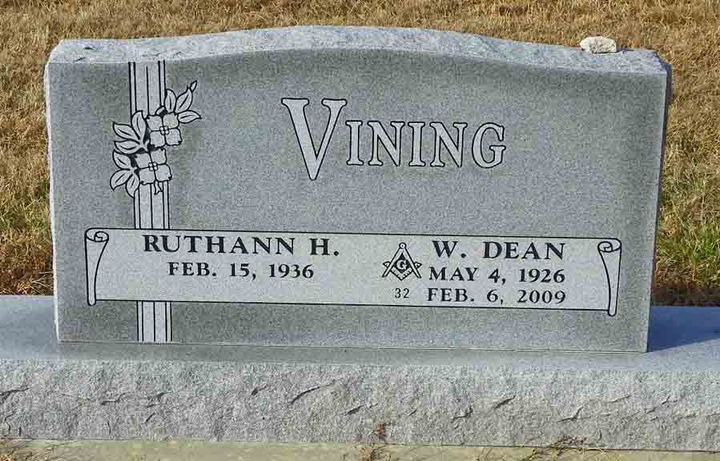
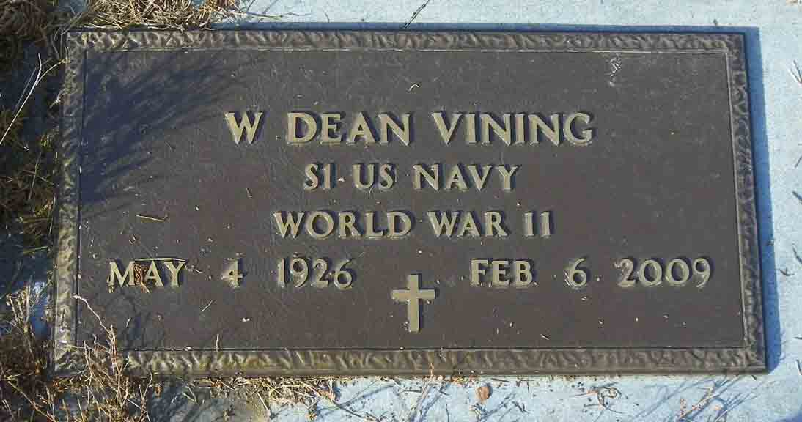

Documentation for Willis Dean Vining - (1) Lois Murphy; (2) Ruthann H. VanDeVeer
Death Data
Headstone for Willis Dean Vining and Ruthann H. (VanDeVeer) Vining and gravestone for Willis Dean Vining, in Woodlawn Cemetery, Pomona, Franklin County, Kansas (from Find A Grave):


Obituary for Leslie Vining, son of Willis Dean Vining and Lois (Murphy) Vining: